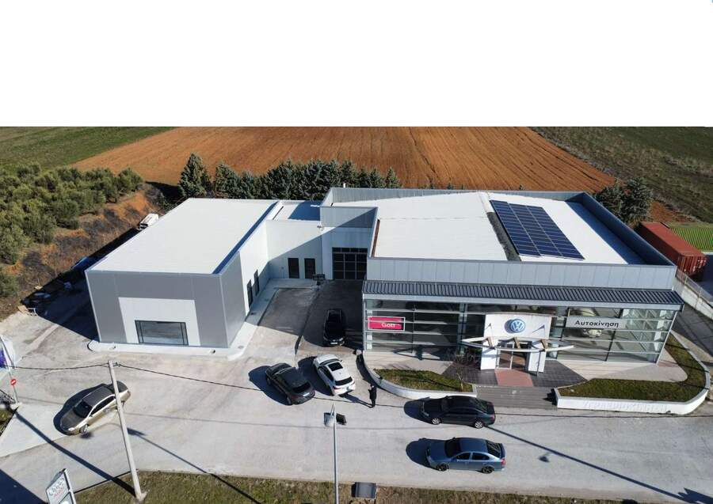

Συχνές Ερωτήσεις
Εγγυήσεις, service, φανοβαφείο και ασφαλιστικές, ανταλλακτικά, χρηματοδότηση και ωράρια. Αν δεν βρείτε αυτό που ψάχνετε, καλέστε μας στο 23410 75330.
Εγγυήσεις
Τα νέα Chery έχουν εγγύηση 7 ετών ή 150.000 χλμ. Η εγγύηση μπορεί να επεκταθεί (με χρέωση) κατά 5 έτη, δηλαδή έως τα 12 έτη, με ανώτατο όριο και πάλι τα 150.000 χλμ.
Η μπαταρία υψηλής τάσης (HV) των Chery καλύπτεται με εγγύηση 8 ετών ή 160.000 χλμ.
Τα νέα Volkswagen και ŠKODA έχουν εργοστασιακή εγγύηση 4 ετών. Με service στο δίκτυο των εξουσιοδοτημένων συνεργείων, η κάλυψη μπορεί να φτάσει έως 10 έτη ή 150.000 χλμ. μέσω της εγγύησης Service Activated Warranty. Οι αναλυτικοί όροι ορίζονται στα προγράμματα Volkswagen JOY και ŠKODA Zen.
Ναι. Οι εγγυήσεις ισχύουν όταν τα service γίνονται σε αντιπροσωπεία ή εξουσιοδοτημένο σημείο service, για όλες τις μάρκες (Volkswagen, ŠKODA, Chery). Οι επεκτάσεις εγγύησης Volkswagen JOY και ŠKODA Zen ενεργοποιούνται μόνο μετά από service στο δίκτυο των εξουσιοδοτημένων συνεργείων. Η Αυτοκίνηση Μ.Ε.Π.Ε. είναι εξουσιοδοτημένο συνεργείο και για τις τρεις μάρκες.
Το συνεργείο μας δίνει εγγύηση 2 ετών στις εργασίες και στα γνήσια ανταλλακτικά που τοποθετούνται.
Το φανοβαφείο μας δίνει εγγύηση 2 ετών στις εργασίες βαφής. Η εγγύηση περιλαμβάνει ανταλλακτικά και εργασίες.
Service & ανταλλακτικά
Ναι. Η Αυτοκίνηση Μ.Ε.Π.Ε. είναι εξουσιοδοτημένο συνεργείο και για τις τρεις μάρκες, με εκπαιδευμένο προσωπικό, το επίσημο σύστημα ETKA και πλήρες τμήμα γνήσιων ανταλλακτικών. Δείτε τη σελίδα του συνεργείου.
Το Express Service αφορά μικρές εργασίες, διαρκεί λιγότερο από μία ώρα και δεν χρειάζεται ραντεβού.
Ναι, κατόπιν συνεννόησης με το συνεργείο, ανάλογα με τη σοβαρότητα και τη διάρκεια της επισκευής και τη διαθεσιμότητα. Απαιτείται προσυνεννόηση.
Ναι. Τα ανταλλακτικά πωλούνται τόσο σε επαγγελματίες όσο και σε ιδιώτες. Διαθέτουμε ανταλλακτικά Volkswagen, ŠKODA και Chery.
Για ανταλλακτικά που είναι διαθέσιμα στους εισαγωγείς στην Αθήνα, η παράδοση γίνεται σε 1 ημέρα. Σε κάθε άλλη περίπτωση χρειάζονται περίπου 10 εργάσιμες ημέρες.
Το προσωπικό του συνεργείου εκπαιδεύεται συνεχώς εδώ και πολλά χρόνια και είναι το ίδιο για πολλά χρόνια. Παρέχουμε υψηλού επιπέδου εξυπηρέτηση, με υψηλή βαθμολόγηση από τους πελάτες μας στα εσωτερικά συστήματα αξιολόγησης της Volkswagen και της ŠKODA, αλλά και στις κριτικές του Google Business Profile.
Φανοβαφείο & ασφαλιστικές
Αναλαμβάνουμε την επισκευή και τη συνεννόηση με τον πραγματογνώμονα και την ασφαλιστική. Παραλαμβάνετε το αυτοκίνητό σας πλήρως επισκευασμένο χωρίς να διαθέσετε χρήματα, εφόσον η ασφαλιστική του υπαιτίου αποδεχτεί την ευθύνη. Η διαδικασία:
- Η δήλωση ατυχήματος γίνεται συνήθως από τη Φροντίδα Ατυχήματος, που φωτογραφίζει τα εμπλεκόμενα οχήματα, καταγράφει τα στοιχεία των εμπλεκομένων και τα προωθεί στις ασφαλιστικές εταιρείες.
- Συνήθως την επόμενη ημέρα οι ασφαλιστικές ανοίγουν τον φάκελο της ζημιάς και ζητούν από την ασφαλιστική του υπαιτίου να αποδεχτεί την ευθύνη.
- Μόλις γίνει η αποδοχή, η ασφαλιστική που θα αποζημιώσει ορίζει πραγματογνώμονα, ο οποίος με ραντεβού κάνει αυτοψία στο αυτοκίνητο, στο φανοβαφείο της επιλογής σας.
- Το φανοβαφείο ελέγχει τη διαθεσιμότητα και το κόστος των ανταλλακτικών, ετοιμάζει την κοστολόγηση της επισκευής και την αποστέλλει ηλεκτρονικά στον πραγματογνώμονα προς έγκριση.
- Μετά την έγκριση ξεκινά η επισκευή και εσείς εκχωρείτε το δικαίωμα αποζημίωσης με Υπεύθυνη Δήλωση.
- Το φανοβαφείο, σε συνεννόηση με τον πραγματογνώμονα και τον διακανονιστή της ζημιάς, εκδίδει τα σχετικά παραστατικά, τα στέλνει στην ασφαλιστική εταιρεία και αναμένει την εξόφληση.
Με την εκχώρηση, το δικαίωμα αποζημίωσης περνά στο φανοβαφείο και η επισκευή γίνεται χωρίς να πληρώσετε εσείς. Υπογράφετε Υπεύθυνη Δήλωση, με επικύρωση του γνησίου της υπογραφής σε ΚΕΠ ή μέσω gov.gr.
Μπορείτε να απευθυνθείτε άμεσα στη δική σας ασφαλιστική εταιρεία. Σε αυτή την περίπτωση η επισκευή ξεκινά μόνο με δική σας εντολή και αναλαμβάνετε εσείς την υποχρέωση να πληρώσετε το κόστος της επισκευής.
Ναι. Αναλαμβάνουμε την επισκευή με εκχώρηση του δικαιώματος αποζημίωσης. Η απαλλαγή περιγράφεται στο ασφαλιστήριο συμβόλαιο κάθε πελάτη και εξαρτάται από τις καλύψεις που έχει επιλέξει.
Από μία ημέρα έως ένα μήνα, ανάλογα με τη φύση και την έκταση της ζημιάς και τη διαθεσιμότητα των ανταλλακτικών.
Ναι, η εκτίμηση κόστους επισκευής της ζημιάς είναι δωρεάν.
Το φανοβαφείο μας είναι συνεργαζόμενο των ασφαλιστικών Generali και Allianz και συνεργάζεται με όλες τις ασφαλιστικές εταιρείες, όπως Ιντερσαλονίκα, AIG, Hellas Direct, Εθνική Ασφαλιστική, Interamerican και άλλες.
Ναι, καλύπτουμε επισκευές για όλες τις μάρκες αυτοκινήτων.
Ναι, συνιστούμε να κλείνετε ραντεβού για τον σωστό προγραμματισμό των εργασιών και τη μείωση του χρόνου παράδοσης.
Πωλήσεις, μεταχειρισμένα & χρηματοδότηση
Πουλάμε νέα αυτοκίνητα Volkswagen, ŠKODA και Chery και είμαστε εξουσιοδοτημένο συνεργείο και για τις τρεις μάρκες. Στη Chery διαθέτουμε τα μοντέλα Tiggo 4, 7, 8 και 9.
Το test drive κλείνεται με ραντεβού και ανάλογα με τη διαθεσιμότητα του εκάστοτε μοντέλου. Καλέστε μας στο 23410 75330 ή γράψτε στο info@vwkilkis.gr (για Chery: info@chery-sakaridis.gr).
Ναι, πουλάμε επιλεγμένα μεταχειρισμένα αυτοκίνητα, κυρίως των μαρκών που εκπροσωπούμε.
Ναι. Η αποτίμηση είναι δωρεάν και χωρίς καμία δέσμευση.
Ναι. Για τα ειδικά προγράμματα της Volkswagen και της ŠKODA (Kosmocar A.E.) η χρηματοδότηση γίνεται μέσω της VW Bank. Μπορείτε επίσης να χρηματοδοτηθείτε μέσω Eurobank και Santander.
Ασφάλιση αυτοκινήτου
Ναι. Η εταιρεία διαθέτει άδεια Ασφαλιστικού Συμβούλου, καταχωρημένη στο Επιμελητήριο Κιλκίς, και εκδίδει συμβόλαια μέσω Allianz και Groupama.
Ωράριο & επικοινωνία
Έκθεση: Δευτέρα–Παρασκευή 08:30–18:30, Σάββατο 11:00–14:30.
Συνεργείο: Δευτέρα–Παρασκευή 08:30–16:30.
Φανοβαφείο: Δευτέρα–Παρασκευή 09:00–17:00.
Το συνεργείο και το φανοβαφείο είναι κλειστά Σάββατο και Κυριακή. Την Κυριακή είναι κλειστά όλα.
Τηλέφωνο: 23410 75330.
Email: info@vwkilkis.gr. Για θέματα Chery: info@chery-sakaridis.gr.
Δυτική Περιφερειακή Οδός, Κιλκίς. Δείτε τον χάρτη.
Δεν βρήκατε την απάντηση;
Καλέστε μας στο 23410 75330 ή γράψτε στο info@vwkilkis.gr.
Επικοινωνήστε μαζί μας →